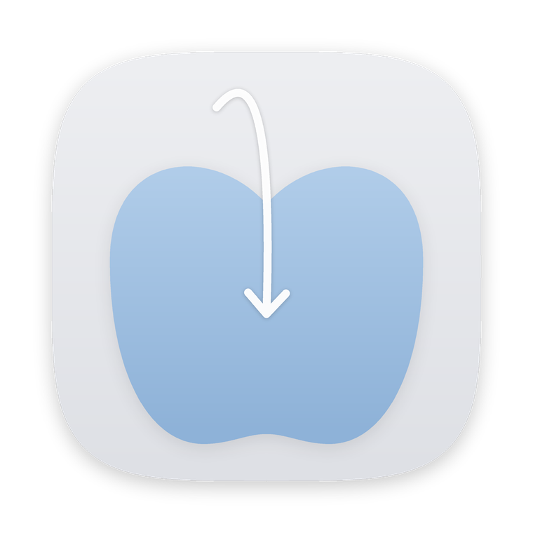

Dropfit · Mac 이미지 포맷 변환
이미지를 Dropfit에 올리고 포맷을 고르면, 바로 변환됩니다.
한 장도, 수백 장도, 폴더째로도.
Steps
이미지나 폴더를 화면에 떠 있는 Dropfit으로 끌어 옵니다.
펼쳐진 포맷 중 하나 위로 가져갑니다.
원본 옆에 새 파일이 생기고, 원본은 그대로입니다.
Install
Security
테스트 버전이라 처음 한 번만 나타납니다.
Dropfit을 처음 열면 뜨는 경고에서 완료를 누릅니다.
아래 버튼으로 개인정보 보호 및 보안을 바로 엽니다.
아래로 내려 그래도 열기를 누르고 암호를 입력하면 끝입니다.
버튼이 보이지 않으면 터미널에서 실행하세요.
xattr -dr com.apple.quarantine /Applications/Dropfit.app
FAQ
네, 테스트 버전은 무료입니다.
낱장은 원본과 같은 폴더에 새 파일로 저장됩니다. 폴더를 올리면 원본 폴더 바로 옆에 ‘폴더명 (포맷)’ 새 폴더가 생기고, 결과가 모두 그 안에 담깁니다. 원본은 어느 경우에도 건드리지 않습니다.
네, 여러 장을 한꺼번에 올려도 됩니다. 폴더를 올리면 원본 폴더는 그대로 두고, 변환된 이미지만 모은 새 폴더를 만들어 줍니다. 예를 들어 ‘여행’ 폴더를 PNG로 바꾸면 옆에 ‘여행 (PNG)’ 폴더가 생깁니다. 하위 폴더는 제외합니다.
장수 제한은 없습니다. 사진 400장이 약 30초에 끝나고, 한 장은 최대 3억 화소까지 변환합니다.
Dock의 Dropfit 아이콘을 클릭하면 Dropfit 위치를 알려 줍니다.
Dropfit을 우클릭해 로그인 시 자동 실행을 켜면 됩니다. 기본값은 꺼져 있습니다.
링크를 보내 준 사람에게 카카오톡으로 알려 주세요.